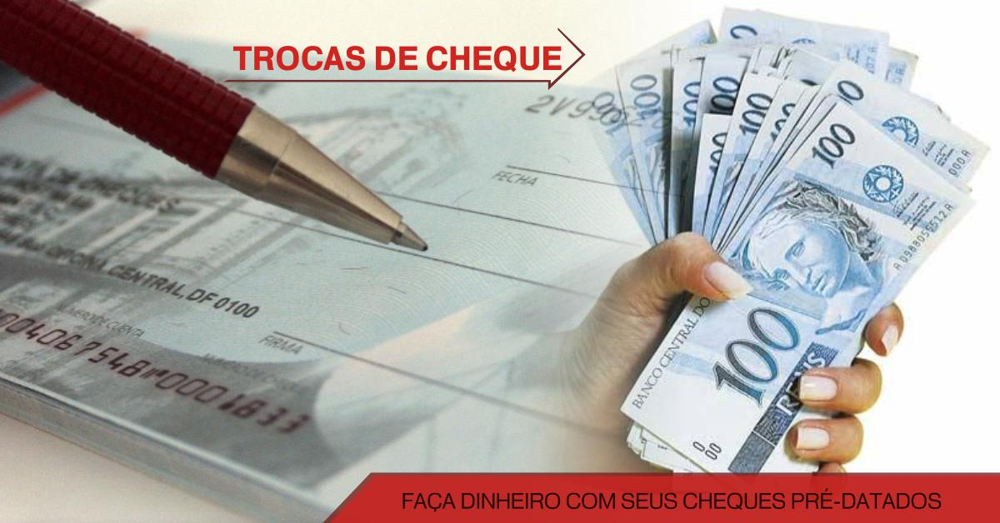

Antecipe seus cheques pré-datados com segurança e taxa justa
A ICC Serra — Banco do Povo — faz a troca dos seus cheques pré-datados com análise humana, taxa fixa e transparência total. Sem surpresa, sem agiota, sem ir de banco em banco. Um agente da sua cidade resolve.
Leva 2 minutos. Um agente da sua cidade fala com você em até 24 horas.

Identificação
Se você está nessa situação agora:
"Recebi cheques pré-datados, mas preciso do dinheiro antes."
"Tenho cheque de cliente bom, mas o banco não quis descontar."
"Fui em financeira e a taxa estava absurda."
"Preciso pagar fornecedor agora, mas o cheque só vence daqui a 60 dias."
"Não sei como transformar esse cheque em dinheiro de forma segura."
"Já vi gente perder dinheiro em troca de cheque com desconhecido."
Existe um jeito seguro de antecipar seu cheque, com instituição reconhecida, sem taxa de agiota. É aqui.
Como funciona
Como funciona a Troca de Cheques na ICC Serra
Conta o que você tem
Você preenche o formulário em 2 minutos — nome, WhatsApp, cidade, quantidade e valor dos cheques que quer antecipar. Sem entregar nada ainda.
Agente analisa com você
Um agente de crédito da ICC entra em contato, conversa sobre os cheques, verifica as informações e explica as condições — valor que você recebe, desconto aplicado, prazo. Tudo na frente, sem letra miúda.
Dinheiro na conta, cheque com a ICC
Aprovado, você entrega os cheques para a ICC e recebe o valor antecipado. Taxa fixa, transparente. Sem susto na conta.
Troca de Cheques ICC Serra
O que você precisa saber antes de solicitar
Quem pode solicitar
- MEI ou microempresário que recebeu cheques pré-datados de clientes
- Pequeno empresário com necessidade de liquidez antes do vencimento
- Comércio de bairro, prestador de serviço, feirante que vende parcelado em cheque
Como funciona a operação
Você tem cheques pré-datados de clientes — recebimentos futuros garantidos no papel. A ICC compra esse recebimento agora, pagando o valor com desconto proporcional ao prazo. Você tem o dinheiro hoje; a ICC fica com o cheque até o vencimento.
Documentos necessários
- RG ou CNH
- CPF
- CCMEI (para MEI) ou documento de atividade empresarial
- Os cheques a serem antecipados
Limites mínimos e máximos por operação, prazo máximo dos cheques aceitos e demais condições operacionais: consulte o agente da sua cidade. Sujeito à análise.
Por que é seguro aqui
Leva 2 minutos. Sem compromisso.
Por que fazer aqui
Por que fazer a troca de cheque aqui, e não em outro lugar?
OSCIP qualificada pelo Ministério da Justiça
Não somos financeira de fachada, não somos agiota. Somos uma instituição comunitária sem fins lucrativos, reconhecida pelo governo federal. Transparência total na operação.
25 anos na Serra Gaúcha — Banco do Povo
Desde 2001 atendendo o pequeno empresário. A ICC não some depois da operação — está aqui amanhã, no mês que vem, para a próxima necessidade.
Taxa fixa e transparente — sem surpresa
Antes de assinar qualquer coisa, o agente mostra exatamente quanto você vai receber e qual é o desconto aplicado. Sem taxa escondida.
Agente da sua cidade, atendimento presencial
Você entrega os cheques para um agente humano — da ICC, com identificação — não para um desconhecido encontrado na internet.
13+ pontos no RS
Caxias do Sul, Bento Gonçalves, Farroupilha, Garibaldi, Vacaria, Veranópolis, Lajeado, Marau e mais.
O que dizem quem já usou a linha
"Recebia cheque de 30 dias dos clientes mas precisava pagar fornecedor à vista. A ICC antecipou os cheques sem complicação. Taxa fixa, sem surpresa. Agora uso toda semana — virou parte do meu fluxo de caixa."
"Tinha R$ 3 mil em cheque pra receber daqui a 45 dias e não ia conseguir pagar o aluguel. Fui na ICC, na mesma semana anteciparam. Sem burocracia, sem juros absurdos. Me salvou."
"Meus clientes pagam bastante com cheque pré. Descobri a troca de cheques da ICC há dois anos e nunca mais passei sufoco no fechamento do mês. O agente explicou tudo direitinho, é simples de usar."
Dúvidas
Perguntas antes de solicitar a troca de cheques
E se o cheque do meu cliente não compensar?
Esse é o risco que a ICC assume na análise. Por isso o agente verifica as informações antes de fechar a operação. Converse com o agente sobre o perfil dos emitentes dos cheques — isso faz parte da análise.
A taxa de desconto vai ser abusiva?
Não. A ICC Serra é uma OSCIP, não uma financeira com fins de lucro. A taxa é fixa e apresentada antes da operação — você sabe exatamente o que vai receber antes de entregar qualquer cheque.
Preciso ser cliente antigo da ICC para usar essa linha?
Não necessariamente. Você pode solicitar mesmo que seja a primeira vez na ICC. O agente vai avaliar as informações e os cheques.
Falar com um agente →Posso antecipar cheques de qualquer valor?
Há limites mínimos e máximos por operação. Fale com o agente da sua cidade para saber se o volume que você tem se encaixa.
Simular agora →A ICC Serra é uma instituição de verdade? Como sei que é seguro?
A ICC Serra existe desde 2001 e é uma OSCIP qualificada pelo Ministério da Justiça — reconhecida pelo governo federal. Tem 13+ pontos físicos no RS. Você pode visitar pessoalmente o posto mais perto antes de fazer qualquer operação. Telefone: 54 3217-8787.
Banco não quis descontar meus cheques. A ICC consegue?
Em muitos casos, sim. A análise da ICC é feita pelo agente, que conhece o contexto local. Muitos cheques recusados pelo banco comercial são aceitos aqui porque a ICC entende a realidade do pequeno empresário da região.
Simular agora →O Banco do Povo não pergunta o que você tem no banco. Pergunta o que você tem em mãos para trabalhar.
Você tem cheques de clientes bons — recebimento garantido. O que faltava era transformar isso em capital agora, sem taxa de agiota e sem risco de cair numa operação suspeita. A ICC Serra faz isso com transparência, agente humano e 25 anos de Banco do Povo como garantia.
Conta o que você tem. Dois minutos.